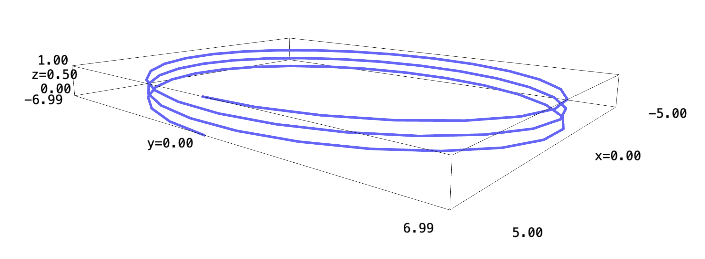

Backlinks
Let's first plot the path of your flight over time, to see what you are at in any given time.
\begin{equation} \vec{p}(t\ minutes) = \begin{bmatrix} 5\ \cos(\frac{\pi}{10}t)\\ 7\ \sin(\frac{\pi}{10}t)\\ -\frac{1}{60}t + 1 \end{bmatrix}\ miles \end{equation}We will define three functions each in \(t\) representing each parameter.
f_x(t) = 5*cos((pi/10)*t) f_y(t) = 7*sin((pi/10)*t) f_z(t) = -(1/60)*t + 1 parametric_plot3d((f_x, f_y, f_z), (t, 0, 60), thickness=4)

1 Basic Information
We go from \(t=[0,60]\) as at \(t=60\) the \(z\) axis would be $0$—rendering you at the ground.
The plane makes three full rotations through its descend into the ground; and, it took \(60\) seconds for it to fully descend. Hence, it would take \(\frac{60}{3} = 20\) seconds for each of the rotations.
Furthermore, we descended from \(1\) mile into the air until being on the ground. This renders us descending \(\frac{1}{3}\) of a mile at each of the loops.
To figure the speed of the descend, we will need to figure the magnitude of the gradient at each of the points.
\begin{align} f_x(t)' &= -\sin\left(\frac{\pi}{10}t\right)\frac{\pi}{2}\\ f_y(t)' &= \cos\left(\frac{\pi}{10}t\right)\frac{7\pi}{10}\\ f_z(t)' &= -\frac{1}{60} \end{align}Therefore, the speed at which you go at can be represented as the magnitude of the above derivative vector:
\begin{equation} \sqrt{\left(\sin^2\left(\frac{\pi}{10}t\right) \frac{\pi^2}{4}\right)+\left(\sin^2\left(\frac{\pi}{10}t\right) \frac{49\pi^2}{100}\right)+\left(\frac{1}{3600}\right)}\ (miles\ per\ minute) \end{equation}Ok, now that we know where we are supposed to be going, we will move forward towards the nuclear disaster.
2 Nuclear Disaster + Re-Vectoring
Let's figure first the actual direction vector at which you are going. We know that you performed the maneuver at 528 feet in the air. We can now solve for a \(t\) which would make this take place:
\begin{align} &-\frac{1}{60}t +1 = 0.1 \\ &-\frac{1}{60}t = -0.9 \\ &\frac{1}{60}t = 0.9 \\ &t = 54 \end{align}Supplying the value of \(t\) into the gradient as determined above, we can see that you are going at, without the maneuver:
\begin{equation} \begin{bmatrix} -\sin\left(5.4\pi \right)\frac{\pi}{2}\\ \cos\left(5.4\pi \right)\frac{7\pi}{10}\\ -\frac{1}{60} \end{bmatrix} \end{equation}The vector of the groundspeed is noted by:
\begin{equation} \begin{bmatrix} -\sin\left(5.4\pi \right)\frac{\pi}{2}\\ \cos\left(5.4\pi \right)\frac{7\pi}{10} \end{bmatrix} \end{equation}Normalizing, we have that:
\begin{equation} \begin{bmatrix} \frac{-\sin\left(5.4\pi \right)\frac{\pi}{2}}{\sqrt{(\sin\left(5.4\pi \right)\frac{\pi}{2})^2+(\cos\left(5.4\pi \right)\frac{7\pi}{10})^2}}\\ \frac{\cos\left(5.4\pi \right)\frac{7\pi}{10}}{\sqrt{(\sin\left(5.4\pi \right)\frac{\pi}{2})^2+(\cos\left(5.4\pi \right)\frac{7\pi}{10})^2}} \end{bmatrix} \end{equation}We know that the max groundspeed of the plane should be \(200mph = \frac{200}{3}\frac{miles}{minute}\). Multiplying the vector by that scalar, we have:
\begin{equation} \begin{bmatrix} \frac{-200\sin\left(5.4\pi \right)\frac{\pi}{2}}{3\sqrt{(\sin\left(5.4\pi \right)\frac{\pi}{2})^2+(\cos\left(5.4\pi \right)\frac{7\pi}{10})^2}}\\ \frac{200\cos\left(5.4\pi \right)\frac{7\pi}{10}}{3\sqrt{(\sin\left(5.4\pi \right)\frac{\pi}{2})^2+(\cos\left(5.4\pi \right)\frac{7\pi}{10})^2}} \end{bmatrix} \end{equation}Solving for the numerical values:
float((-200*sin(5.4*pi)*(pi/2))/(3*sqrt((sin(5.4*pi)*(pi/2))^2+(cos(5.4*pi)*(7*pi/10))^2))) float((200*cos(5.4*pi)*(7*pi/10))/(3*sqrt((sin(5.4*pi)*(pi/2))^2+(cos(5.4*pi)*(7*pi/10))^2)))
Therefore:
\begin{equation} \begin{bmatrix} 60.68 \\ -27.6 \end{bmatrix} \end{equation}is the direction of lateral movement.
The speed of rise is 4 metres a second. The rate of rise is, after conversion:
\begin{equation} \frac{4\ meters}{1\ sec}\frac{60\ sec}{1\ min}\frac{1\ mile}{1609.34\ meters} = 0.149\ miles\ per\ minute \end{equation}Hence, the taking the actual velocity vector:
\begin{equation} \begin{bmatrix} 60.68 \\ -27.6\\ 0.149 \end{bmatrix} \end{equation}We will normalize this vector to figure the direction towards which we are going; we first find the magnitude of this vector:
sqrt(60.68^2 + 27.6^2 + 0.149^2)
Furthermore, you are going at \(66.66\) miles per minute, as per the normalization above. Now, dividing each of the values by the normalization:
\begin{equation} \begin{bmatrix} 0.91\\ -0.414\\ 0.0022 \end{bmatrix} \end{equation}This is the direction vector at which you are going. We can also cast it to a navigational heading:
\begin{equation} \begin{bmatrix} 0.91\\ -0.414 \end{bmatrix} \end{equation}We can now solve the angle between the incline and the direction: To figure the degree of incline, we take the arccos of the dot product:
\begin{align} \begin{bmatrix} 0.91\\ -0.414\\ 0 \end{bmatrix} \cdot \begin{bmatrix} 0.91\\ -0.414\\ 0.0022 \end{bmatrix} &= 1.242\ cos(\theta)\\ 0.999496 &= 1.242\ cos(\theta)\\ 0.8047 &= cos(\theta)\\ \theta &= 36.41^{\circ} \end{align}This is unfortunately not the direction we should be going in. We are currently at \(t=54\), this renders our location to be:
\begin{equation} \begin{bmatrix} 5\ \cos(\pi 5.4)\\ 7\ \sin(\pi 5.4)\\ 0.1 \end{bmatrix} \end{equation}We will take now the gradient of the function:
r(x,y,z) = 1/(x^2+y^2+z^2) r.diff()
Supplying the location at the point into the gradient function and normalizing by the magnitude to create the direction vector:
\begin{equation} \frac{\nabla r(t=54)}{||\nabla r(t=54)||} = \begin{bmatrix} 0.226\\ 0.974\\ -0.0146 \end{bmatrix} \end{equation}To be able to descend towards the lowest level of radiation, we wish to go in the opposite direction as that which described by the vector above.
Hence, you should probably be going in
\begin{equation} \begin{bmatrix} -0.226\\ -0.974\\ 0.0146 \end{bmatrix} \end{equation}to avoid radiation.
Side-note: "vectoring" is the process in aviation-lingo to orient the flight. Hence, if ATC assigns a new flight path, it is called "re-vectoring" a flight. Hence, we did indeed come up with a new vector and "re-vectored" the 172. I suppose that's why they use the term.
3 Total Radiation
To figure the total radiation over the journey, we have to take the parameterization of radiation from \(t=-\infty\ \to 54\) along the original descend curve, then again from \(t=54 \to \infty\) along the new, linear path.
3.1 After Re-Vectoring
We note that, from before, the speed and direction at which we are going at after re-vectorization is:
\begin{equation} \begin{bmatrix} -0.0014\\ -0.0061\\ 9.163 \times 10^{-5} \end{bmatrix} \end{equation}Adding our start location, and converting the expression into a linear one for location \(t\):
\begin{equation} \begin{bmatrix} 5\ \cos(\pi 5.4) -0.0014t\\ 7\ \sin(\pi 5.4)-0.0061t\\ 0.1+9.163 \times 10^{-5}t \end{bmatrix} \end{equation}Performing the actual parameterization, then:
t = var("t")
change = sqrt(((5*cos(pi*5.4) - 0.0014*t).diff(t))^2 + ((7*sin(pi*5.4) - 0.0061*t).diff(t))^2 + ((0.1 + 3.163e-5 *t).diff(t))^2)
func = r(5*cos(pi*5.4) - 0.0014*t, 7*sin(pi*5.4) - 0.0061*t, 0.1 + 3.163e-5 *t)
And finally, we will integrate this function from \(54\) to \(+\infty\):
(func*change).integral(t, 54, infinity)
We can see, after our escape we only get about \(0.1394\) sivers of radiation even as we fly off into the sunset.
3.2 Before Re-Vectoring
Before re-vectoring, we are descending slowly towards the source of radiation.
From before, we have:
\begin{equation} \vec{p}(t\ minutes) = \begin{bmatrix} 5\ \cos(\frac{\pi}{10}t)\\ 7\ \sin(\frac{\pi}{10}t)\\ -\frac{1}{60}t + 1 \end{bmatrix}\ miles \end{equation}Converting these values into Sage expressions:
f_x(t) = 5*cos((pi/10)*t) f_y(t) = 7*sin((pi/10)*t) f_z(t) = -(1/60)*t + 1
We will again perform the parameterization with these values:
t = var("t")
change = sqrt((f_x(t).diff(t))^2+(f_y(t).diff(t))^2+(f_z(t).diff(t))^2)
func = r(f_x(t), f_y(t), f_z(t))

Plotting the function of \(f\ \frac{df}{dt}\), we see that the function trends towards \(0\) as time becomes more negative—which makes sense: you have higher radiation levels as you are closer to the airport.
And, as before, we integrate from \(-\infty\) up to \(54\). However, Sage (nor Mathematica nor WolframAlpha) seem to be able to compute an exact value for the integral. Hence, we will instead take the Riemann Sum from a very large negative number to 54.
monte_carlo_integral((func*change), [-10000], [54], 10000000)
It seems like, with a \(2\%\) margin of uncertainty, we will receive about \(29.57\) siverts.
3.3 Will you die?
Adding the two components together, we are expected to receive lower than or equal to about \(29.60\) sieverts throughout the journey.
This is equivalent to \(29600\) milisieverts (mSv), the standard unit for measuring radiation safety.
To give some sense of how disastrously cancer-inducing it is, take the following reference values:
- Occupational safety limit: \(50\) mSv per year
- Public safety limit: \(1\) mSv per year
- L/D 50: \(5000\) mSv
Given this information, you are much beyond the L/D 50 of ionizing radiation. Hence, you likely died.
3.4 Post-mortem
I feel like leaving the SSet on the "you died" note is not the most cheerful, so here's some food for thought. According to fandom, Dr. Bruce Banner received \(85\) siverts of radiation before becoming the Hulk. You would therefore likely not become the Hulk.
However, there is a bright side. "Doctor Manhattan" of the DC comics had a real-life counterpart, Albert Stevens—who, due to a misdiagnosis of terminal cancer—involuntarily underwent a high-dose nucleation experiment in which he was injected with enough plutonium amounting to \(64\) siverts. He never developed cancer after the injection, and lived to be 79 and died from a heart attack. So, perhaps, you may survive after all.
Though it is very unlikely.